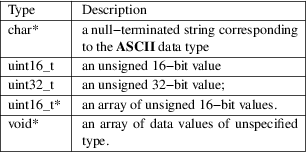
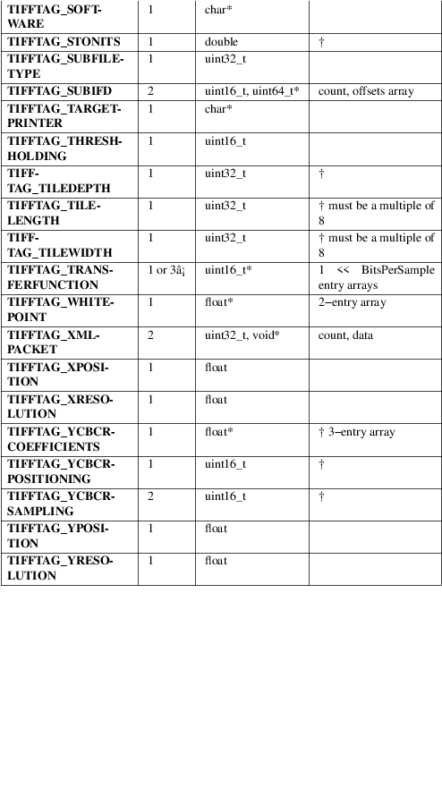

TIFFSetField − set the value(s) of a tag in a TIFF file open for writing
#include <tiffio.h> #include <stdarg.h>"
int TIFFSetField(TIFF *tif,
ttag_t tag, ...)
int TIFFVSetField(TIFF *tif, ttag_t tag, va_list ap)
int TIFFUnsetField(TIFF *tif, uint32_t tag)
TIFFSetField() sets the value of a field or pseudo−tag in the current directory associated with the open TIFF file tif. (A pseudo−tag is a parameter that is used to control the operation of the TIFF library but whose value is not read or written to the underlying file.) To set the value of a field the file must have been previously opened for writing with TIFFOpen(). Pseudo−tags can be set whether the file was opened for reading or writing. The field is identified by tag, one of the values defined in the include file tiff.h (see also the table below). The actual value is specified using a variable argument list, as prescribed by the stdarg.h interface.
TIFFVSetField() is functionally equivalent to TIFFSetField() except that it takes a pointer to a variable argument list. TIFFVSetField() is useful for writing routines that are layered on top of the functionality provided by TIFFSetField().
TIFFUnsetField() clears the contents of the field in the internal structure. If it is a custom field, it is removed from the list of known tags.
The tags understood by libtiff, the number of parameter values, and the expected types for the parameter values are shown below. The data types are:

Consult the TIFF specification for information on the meaning of each tag.

|
†: |
Tag may not have its values changed once data is written. |
â¡:
If SamplesPerPixel is one, then a single array is passed; otherwise three arrays should be passed.
|
*: |
The contents of this field are quite complex. See âThe ICC Profile Format Specificationâ, Annex B.3 âEmbedding ICC Profiles in TIFF Filesâ (available at http://www.color.org) for an explanation. |
1 is returned if the operation was successful. Otherwise, 0 is returned if an error was detected.
All error messages are directed to the TIFFErrorExtR() routine.
%s: Cannot modify tag "%s" while writing:
Data has already been written to the file, so the specified tagâs value can not be changed. This restriction is applied to all tags that affect the format of written data.
%d: Bad value for "%s":
An invalid value was supplied for the named tag.
TIFFOpen (3tiff), TIFFGetField (3tiff), TIFFSetDirectory (3tiff), TIFFWriteDirectory (3tiff), TIFFReadDirectory (3tiff), libtiff (3tiff)
LibTIFF contributors
1988-2022, LibTIFF contributors